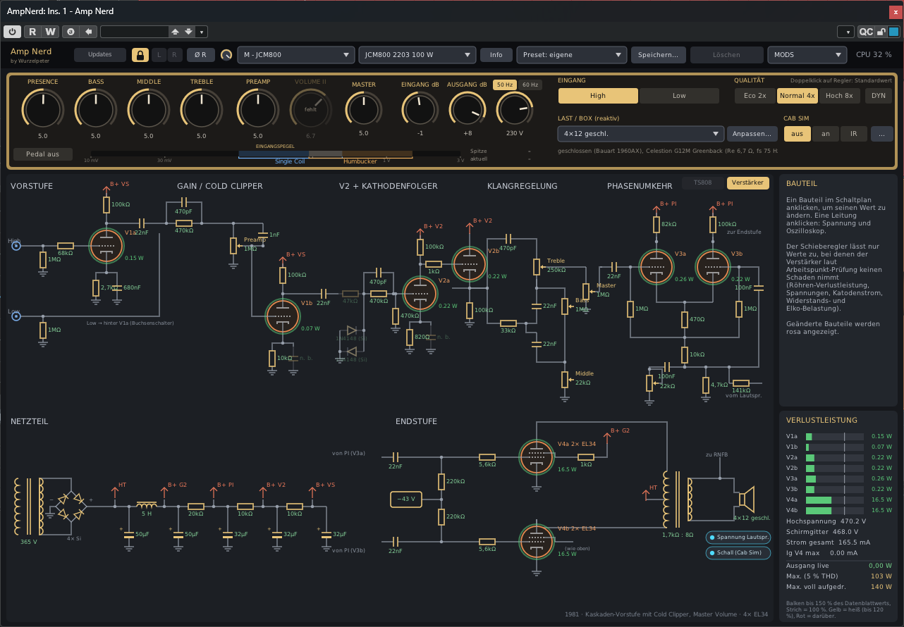
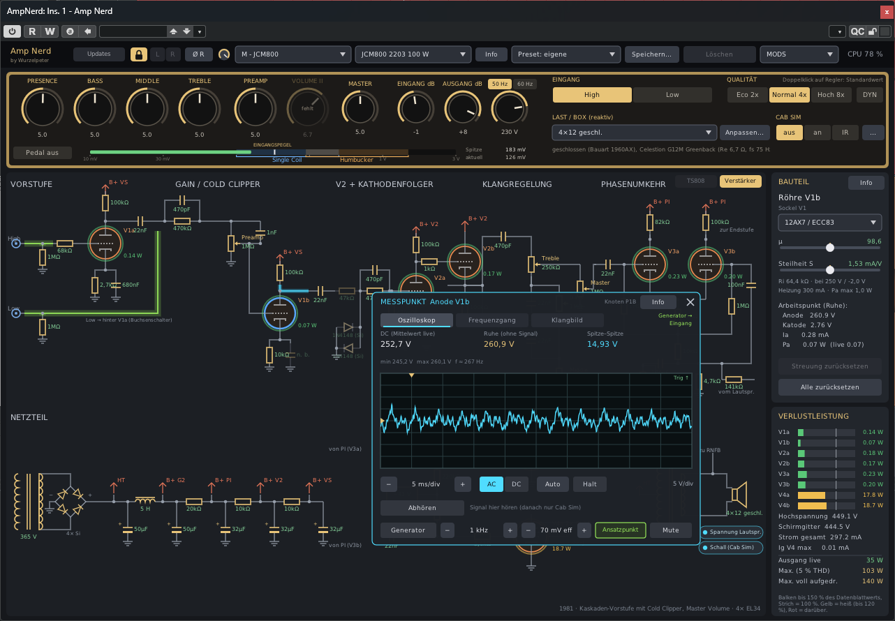
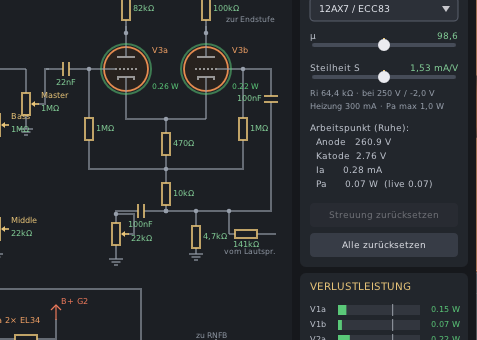

Amp Nerd
Kein Profiler, keine Faltung: Amp Nerd rechnet die komplette Schaltung eines Röhren-Gitarrenverstärkers als elektrisches Netzwerk – Vorstufe, Klangregelung, Phasenumkehr, Endstufe mit Ausgangsübertrager, Netzteil und reaktive Lautsprecherlast. Jedes Bauteil ist im Schaltplan sichtbar, anklickbar und in sicheren Grenzen veränderbar. Zerre, Kompression, Sag und Brumm entstehen aus der Schaltung – nicht aus Effekten.

Ein Verstärker, den man anfassen kann
Andere Plugins liefern Klang. Amp Nerd liefert den Weg dorthin: Jede Röhre, jeder Widerstand und jeder Elko der Originalschaltung wird als elektrisches Modell mitgeliefert – mit live ermittelten Anodenspannungen, Strömen und Verlustleistungen.
Schaltplan zum Anfassen
Jedes Bauteil anklicken und per Schieberegler ändern – nur dort, wo der echte Verstärker keinen Schaden nähme. Dazu ein Infotext je Bauteil und eine Seite „Simulationsmodell“.
Röhren & Mods
12AX7, 12AT7, 12AU7, 12AY7, 5751, 12AV7 je Sockel – mit Exemplarstreuung und optionaler Auto-Bias. Dazu die klassischen Hot-Rod-Mods: Kaskade, Master, Mittenboost, Tight, Clipping-Dioden und mehr.
Werkbank im Plugin
Messspitze an jede Leitung, Oszilloskop mit Klirrfaktor, Abhören an jedem Punkt, Signalgenerator, Frequenzgang-Sweep und das Klangbild – als wäre der Amp auf der Werkbank angeschlossen.
Vom Plexi-Tweed bis zum Dual Rectifier
Super Lead, JTM45, JCM800 2203, Silver Jubilee – weiter bei Hiwatt, Fender (Tweed, Silverface, Brownface), Dumble, Diezel und Mesa. Dazu Pedale mit eigener Schaltung: der Tube Screamer im TS808-Gehäuse und ein EQ-Pedal.
Alle Modelle in der Übersicht – mit Varianten, Röhrenbesetzung und Besonderheiten.
Alle Modelle ansehen

Alles, was du hörst, ist abgeleitet
Spannung, Strom, Verlustleistung, Hochspannung, Ausgangsleistung – Amp Nerd zeigt dir, was in der Schaltung gerade geschieht, und prüft, was beim Nachbauen am echten Amp sicher verändert werden dürfte.